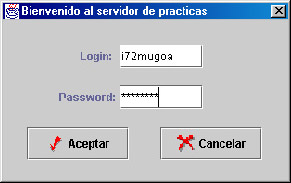

El servidor de prácticas es una
de las novedades mas importantes de SiCoMe respecto de otros simuladores
anteriores. Gracias a este servicio, puede tener sus ficheros de prácticas en
un servidor remoto, ahorrándose el espacio en su disco, y lo que es más
importante, estarán disponibles para su profesor. Esto le permitirá ahorrarse la
entrega de dichas prácticas o incluso la asistencia a las clases prácticas,
pues con el simulador SiCoMe usted puede trabajar desde su casa y dejar las
prácticas en el servidor.
Lo primero que debe poseer si
desea hacer uso del servidor de prácticas es una conexión a internet. Usted
puede conectarse por módem, cable, ADSL o bien a través una red local. Si su
conexión es por módem, asegúrese que está conectado a internet antes de
intentar conectar con el servidor.
Para conectar con el servidor de práctica diríjase a la opción del
menú:
Servidor/Conectar
con el servidor
Cuando haya hecho esto, aparecerá ante usted la pantalla de
autentificación del acceso al servidor:

En esta pantalla se le solicita
el login o nombre de usuario y su clave personal de acceso o password.
Inserte los datos requeridos y pulse el botón "Aceptar".
Si toda la información es correcta y usted tiene cuenta de usuario en el
servidor, la conexión se realizará con éxito. Esto se verá reflejado en la
barra de estado con el mensaje: "conexión: acceso permitido".
Así mismo, en la parte derecha de la barra de estado, la cual refleja en todo
momento el estado de la conexión al servidor, se cambiará el "desconectado",
por "conectador: login", donde login será su nombre de
usuario. Si tiene algún problema durante la conexión y se le muestra en
pantalla algún mensaje de error, consulte la sección Problemas con el servidor.